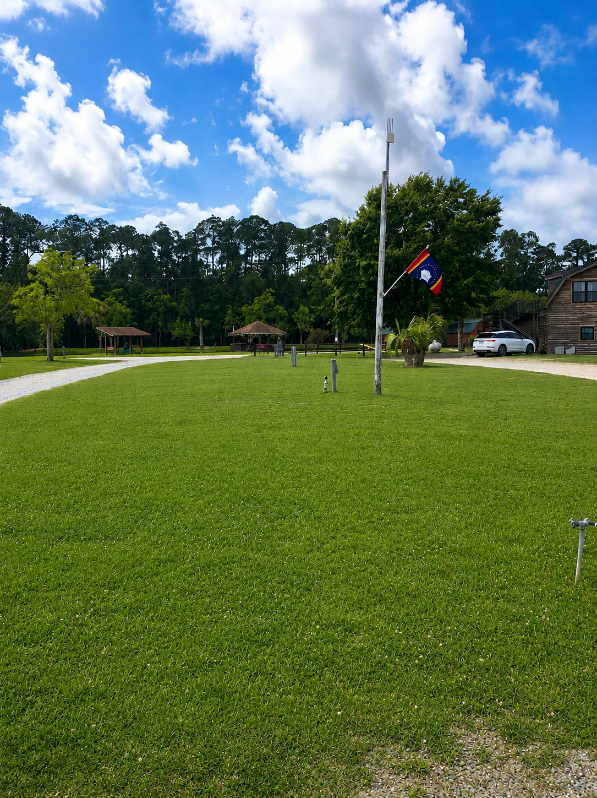
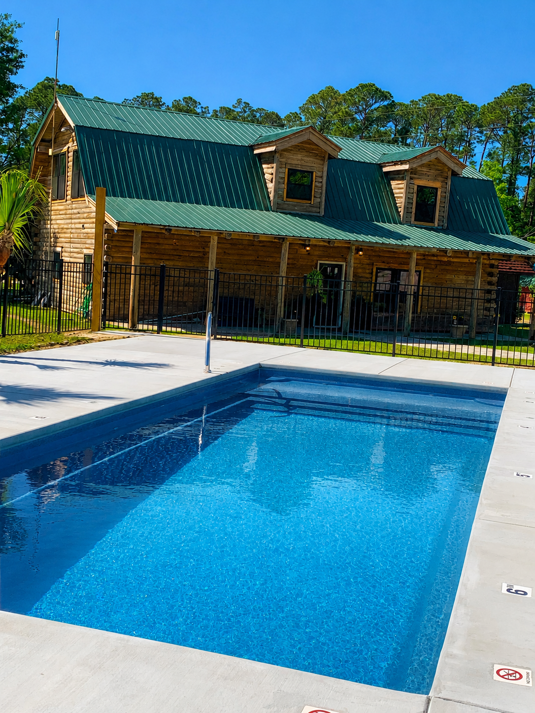
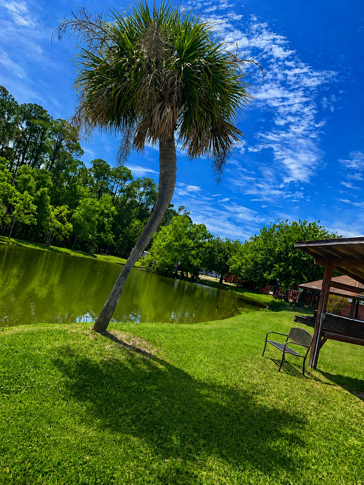

Close to everything
Reach Bay St. Louis beach, downtown restaurants, casinos, and day trips around the Gulf Coast without giving up the laid-back campground feel.
Mississippi Gulf Coast Camping
Bay St. Louis Campground offers full-hookup RV sites, cozy cabins, and family-friendly amenities in one calm coastal basecamp just off Highway 90.

Campground Map
Reach Bay St. Louis beach, downtown restaurants, casinos, and day trips around the Gulf Coast without giving up the laid-back campground feel.
Cabins, a playground, a pool, and a catch-and-release pond make it easy to settle in for a long weekend or a longer stay.
Full hookups, on-site laundry, and approachable daily pricing keep the experience relaxed and low-fuss.
Amenities

Water, sewer, electricity, and Wi-Fi are built into every rate.

Cool off after the beach or give the kids a steady vacation favorite.

Enjoy a catch-and-release pond right on site for a quieter afternoon.
A simple family perk that gives little campers room to roam.
Practical amenities that make longer stays easier to manage.
Explore The Area
Start the day with coffee in town, head to the beach, swing by local shops, and still be back at your site before sunset.
Beach

Just 2 miles from camp for an easy beach stop.
Downtown

Easy access to Bay St. Louis favorites without a long drive.
Downtown photo provided for this site update.
Day Trip

About 55 miles away when you want a bigger-city adventure.
Photo by Tom Hilton via Wikimedia Commons, CC BY 2.0
Attractions
Keep the local picks tight: one walkable option from camp plus a few downtown Bay St. Louis favorites for breakfast, dinner, and live music.

Walking Distance Pick
A close-to-camp option for tacos, margaritas, and an easy casual night without needing to plan much.
Open In MapsBreakfast
Good first stop for coffee, breakfast, and an easy start before the beach or a downtown walk.
Places To Eat
Use Thorny Oyster for seafood and raw-bar energy, or Anthony's when you want a nicer downtown dinner.
Bars + Live Music
Pick Blind Tiger for a casual waterfront hang, then Dan B's when you want drinks, music, and more energy.
Local Events Calendar
Filter for Bay St. Louis, Waveland, or Gulfport/Biloxi, then pick a day to reveal that date's sourced lineup. On mobile, the calendar shifts to a one-week snapshot and the date picker lets guests jump straight to the week they want.
Events in this calendar are generated from local community sources. Refresh details load with the calendar.
Plan Your Stay
For availability, cabin questions, or monthly rates, contact the campground directly. This redesign keeps the call-to-book flow simple and front-and-center.
{kind=link}